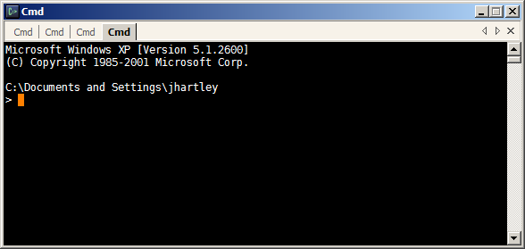

Programming on Windows : Use Console
Developing software on Microsoft Windows is a bloody awful experience compared to the boyish flamboyance of Macs or the mad scientist thrill-a-minute of wrestling Linux into shape. But fear no more, you no longer need to hide behind that fullscreen IDE, pretending that the rest of your OS doesn't exist. Help is at hand.
I often feel that with just a dozen small modifications, the UI of Microsoft Windows could be perfectly usable for me. However, successive releases of Windows seem to steadfastly ignore the minor changes I'd love to see. If anything, they move relentlessly in the opposite direction with every release.
This is the first in a series of tweaks to work around some of these deficiencies, to create something approaching a sane software development environment on Windows. If you are a *nix or command-line jockey, this might make your visits to Windows-land more comfortable. If you're a Visual Studio devotee, this might add some alternative tools to your repertoire.
My idea is that each post will be small enough that you can implement the change it suggests immediately, right now, as you're reading it.
The Console
The console, by which I mean the black DOS 'Command Prompt' window, is the pivot around which the rest of your software development activities rotate. Or at least it could be, if it was any good. The built-in Command Prompt, however, is absolute garbage. Replace it with the poorly-named 'Console' project from SourceForge:
https://sourceforge.net/projects/console/
Once installed, you could fiddle around with the settings endlessly, or just copy my console.xml config to your home directory:
after which Console should look something like:

Console provides a few superficial benefits that prove to be indispensable in everyday use:
- Cut and paste is no longer an unimaginable pain in the ass. What a concept. My config automatically copies selected text to the clipboard, so you don't even need to hit Ctrl-C. Because of this, I've reverted the action of Ctrl-C to its more venerable usage of 'kill the running command'.
- Selecting text with the mouse now works sanely, although sadly you can't double/triple click to select words or lines.
- Multiple tabs. My config defines keys: Ctrl-T (new), Ctrl-W (close), and Ctrl-tab (next).
- PageUp and PageDown scroll, without needing to move your hand to the mouse. My config actually uses Shift-PageUp and Shift-PageDown, so that it's like old XTerms that my fingers apparently still remember.
- We can choose any font. I like Deja Vu Sans Monospace, no doubt you like something totally different.
- We can resize the window however we like.
- Transparency. I don't like it, some people do. (Update: Redacted. I've been converted. Now I love it.)
{kind=link}
The old built-in Command-Prompt will still pop up if you double-click a .bat file - I don't know how to change this magic built-in association. Otherwise though, you can now just use the new Console for everything you do.
Alright. We've taken our first step. Next up, we'll see some of the uses to which we can put our new toy.
Comments